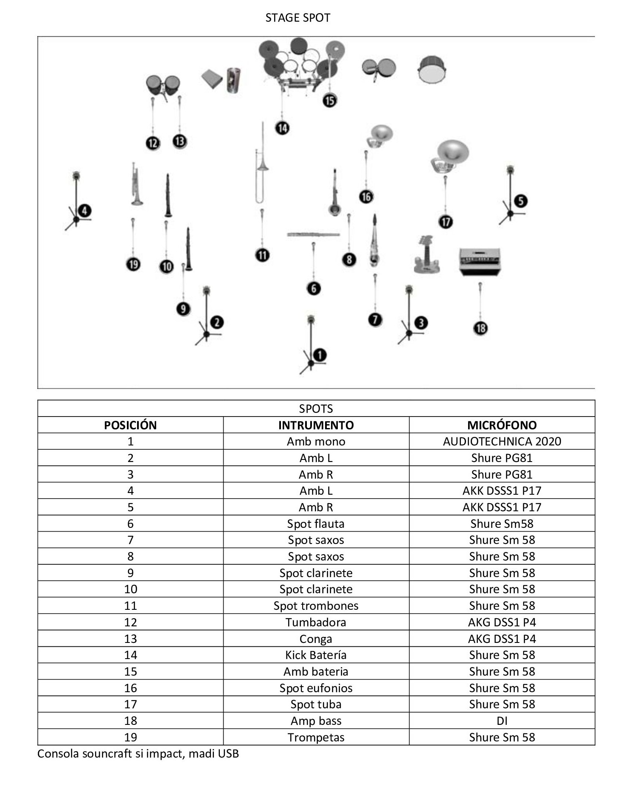

Descripción de la grabación
Grabación realizada a la Banda de Payuco el dia 16 de Julio de 2020 en el Teatro Juan de Dios Aranzazu ubicado en el Municipio de La Ceja, lugar en el cual radica la banda. Para la grabación de este concierto fue necesario considerar las siguientes variables: - Espacio - Magnitud de la banda - Equipos de grabación Descripción del espacio: El Teatro Juan De Dios Aranzazu es un espacio cerrado, con dimensiones amplias acordes para un aforo de aproximadamente 500 personas. Este espacio cuenta con un diseño acúsitico convencional para la escucha de la audiencia, el escenario se encuentra en frente de la misma; tambien, se cuenta con un aislamiento acústico que tiene su eficiencia en un 80% para que no entre ni salga el sonido emitido desde adentro y fuera del teatro. Descripción de la banda: Para esta grabación la banda no contaba con la totalidad de sus musicos, en esta ocasión se presentaban los siguientes instrumentos:1 flauta, 4 saxofónes, 4 clarinetes, 4 trompetas, 2 eufonios, 3 trombones, 1 tuba, 1 Baby bass, 1 bateria/Timbales, 1 conga 3 -2 macho, 1 conga hembra y percusión menor. Equipos de grabación: Se puso a disposición un total de 18 microfonos entre condesadores y dinámicos, 25 cables XLR, 1 amplificador de bajo y 1 caja directa. Para la conversión A/D se usó una consola digital souncraft SI impact que cuenta con protoolo de grabación MADI y por ultimo se usó un ordenador portatil con el software Pro Tools. Posicionamiento de los micrófonos Para la optimización de los recursos de grabación se decidió colocar un spot a cada grupo de instrumentos por familias y voces, tambien se vió la necesidad de capturar la banda de manera general y por ello aplicamos 2 técnicas estéreo (Par espaciado A-B), junto con esto se consideró que hacer una captura mono enriquecería la imagen estéreo y los procesos de post producción.
